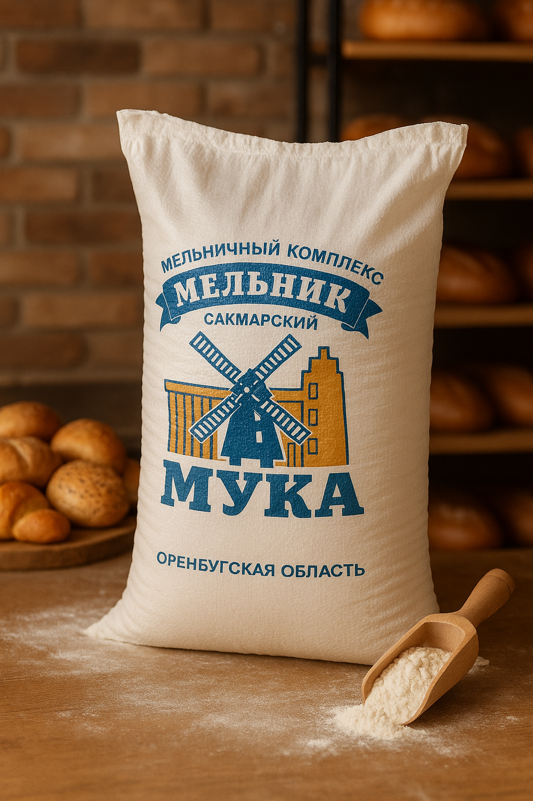
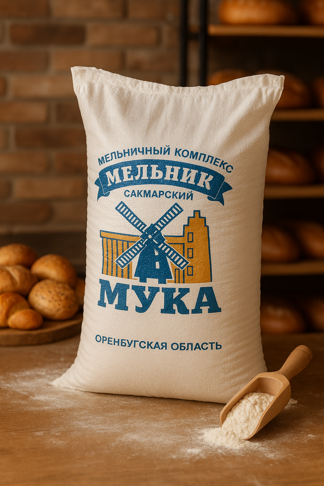

Общество с ограниченой ответственностью "Каспий Агро"
Динамично развивающаяся агроторговая компания, успешно работающая на рынке более 5 лет. Основным направлением деятельности компании является оптовая продажа высококачественной муки и отрубей, производимых на российских мукомольных предприятиях, с последующей поставкой в страны Средней Азии, включая Казахстан, Узбекистан и другие перспективные рынки.
Почему выбирают нас?
- Более 5 лет опыта
- Экологически чистый продукт
- Доставка в Россию, Казахстан и Узбекистан
 
